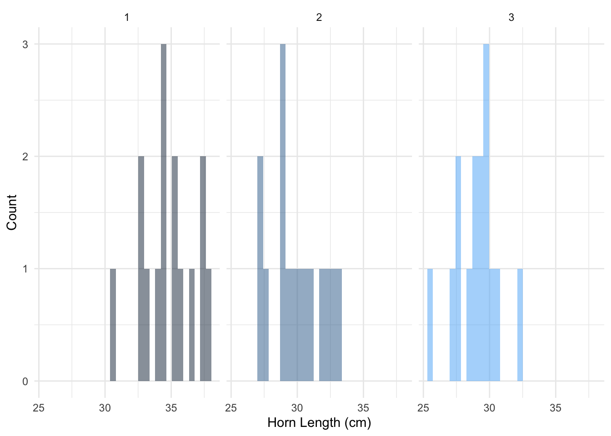
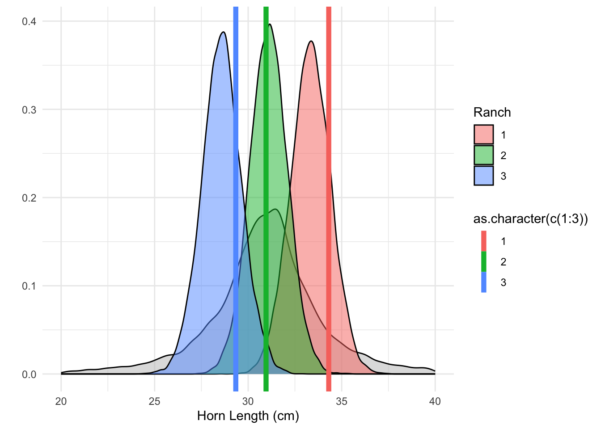

Hierarchical models are really where we start to unlock the power of bayesian analyses. The crux of a hierarchical model is to identify some population can be either made up of multiple sub-populations or maybe part of multiple larger groups. A hierarchical model allows us to identify variation across these different groups
Long horned longhorns:
I’m diverging from the spooky examples now going to look at longhorns around different ranches. We are interested in the length of steers’ horns - maybe Bevo wants to make sure he has no competition!
It’s all the same species, but we can imagine three different ranches which hold longhorn cattle. Let’s say longhorns have an average horn length of 30cm with a standard deviation of 4cm. But we have three ranches. The ranches may all have a different mean value for their cattle, which is some variation of the group mean. I tried really hard to find some data on actual longhorns. However, there is little public information. If anyone wants to go out and measure on the ranch outside Aransas Pass, I’d appreciate it.
For execution on a local, multicore CPU with excess RAM we recommend calling
options(mc.cores = parallel::detectCores()).
To avoid recompilation of unchanged Stan programs, we recommend calling
rstan_options(auto_write = TRUE)
For within-chain threading using `reduce_sum()` or `map_rect()` Stan functions,
change `threads_per_chain` option:
rstan_options(threads_per_chain = 1)
library(dplyr)
Attaching package: 'dplyr'
The following objects are masked from 'package:stats':
filter, lag
The following objects are masked from 'package:base':
intersect, setdiff, setequal, union
library(bayesplot)
This is bayesplot version 1.11.1
- Online documentation and vignettes at mc-stan.org/bayesplot
- bayesplot theme set to bayesplot::theme_default()
* Does _not_ affect other ggplot2 plots
* See ?bayesplot_theme_set for details on theme setting
library(tidyr)
Attaching package: 'tidyr'
The following object is masked from 'package:rstan':
extract
source('../R/utils.R') #double check this path if you copied
Attaching package: 'lubridate'
The following objects are masked from 'package:base':
date, intersect, setdiff, union
######## Different ranches with steers######## Define parametersglobal_mean <-30n_ranches <-3cows_per_ranch <-15sigma_ranch <-5# ranch level variationsigma_cow <-2# individual variation# simulate ranch specific means with ranch-variationranch_means <-rnorm(n_ranches, global_mean, sigma_ranch)# Simulate dataranch_data <-data.frame(ranch =rep(c(1:n_ranches), each = cows_per_ranch),cow_id =1:(n_ranches * cows_per_ranch),horns =c(1:n_ranches) |>lapply(function(r) rnorm(cows_per_ranch, ranch_means[r], sigma_cow)) |>unlist())ggplot(ranch_data) +geom_histogram(aes(x = horns, fill = ranch ),alpha =0.5 ) +facet_wrap(.~ranch) +labs(x ="Horn Length (cm)", y ="Count")+theme_minimal() +theme(legend.position ='none')
`stat_bin()` using `bins = 30`. Pick better value with `binwidth`.

We can see, there some global level of a mean, but it varies by ranch!
So now things start getting a little long with terminology. We’ll call our steer horn lengths \(y_{ij}\) for all \(i\) observations from each \(j\) ranch. Each steer’s horns come from some variaton common across all steers, \(\sigma\). Each ranch has a mean \(\mu_j\), which is drawn from the global mean of all longhorn horns, \(\gamma\). The ranch mean is drawn from a distribution of ranches, with variation \(\epsilon\)
In this structure, you may here \(\gamma\) or \(\tau\) referred to as hyperparameters or that they are specified from hyperpriors, which influence the lower observations!
It is also common and helpful to draw diagrams (DAGs) to reflect the structure, but I haven’t found a good way to do that on the computer yet.
Inference for Stan model: ranch-horns.
4 chains, each with iter=5000; warmup=1000; thin=1;
post-warmup draws per chain=4000, total post-warmup draws=16000.
mean se_mean sd 2.5% 25% 50% 75% 97.5% n_eff
mu_global 31.00 0.05 3.73 23.13 29.42 31.02 32.57 39.22 5497
ranch_means[1] 33.33 0.01 1.08 31.20 32.62 33.34 34.06 35.43 8258
ranch_means[2] 31.10 0.01 1.02 29.09 30.42 31.10 31.77 33.13 12165
ranch_means[3] 28.58 0.01 1.07 26.47 27.88 28.58 29.28 30.74 6857
sigma_cow 4.09 0.00 0.46 3.31 3.76 4.05 4.37 5.11 10310
sigma_ranch 5.42 0.06 4.29 1.15 2.57 4.09 6.77 17.51 5183
lp__ -87.94 0.03 1.91 -92.54 -89.00 -87.62 -86.51 -85.21 5088
Rhat
mu_global 1
ranch_means[1] 1
ranch_means[2] 1
ranch_means[3] 1
sigma_cow 1
sigma_ranch 1
lp__ 1
Samples were drawn using NUTS(diag_e) at Wed Oct 30 11:36:16 2024.
For each parameter, n_eff is a crude measure of effective sample size,
and Rhat is the potential scale reduction factor on split chains (at
convergence, Rhat=1).
We have a lot to parse apart here, but let’s look at a visual:
horn_post = rstan::extract(horn_fit)ggplot() +geom_density(aes(x = horn_post$mu_global),fill ='grey', alpha =0.5 )+geom_density(data = horn_post$ranch_means |>as.data.frame() |>pivot_longer(cols =everything(),names_to ='Ranch', values_to ='horn_length' ) |>mutate(Ranch =gsub('V', '', .data$Ranch)),aes(x = horn_length, fill = Ranch),alpha =0.5 ) +geom_vline(aes(xintercept = ranch_means, color =as.character(c(1:3))),linewidth =2 ) +#I'm truncating te y xis for clarityscale_x_continuous(limits =c(20, 40)) +labs(x ='Horn Length (cm)', y ="") +theme_minimal()
Warning: Removed 472 rows containing non-finite outside the scale range
(`stat_density()`).

We can see in this figure our individual ranch mean posteriors, with the global posterior shown behind in grey. True values are vertical lines.
One thing also to consider here is that we simulated the data to all have roughly similar observations. However, a nice feature of a hierarchical set up is the idea of shrinkage - if there is a global level mean, but few observations for a group/individual level mean, those values can effectively borrow from the better observed groups and shink towards the global mean. Conversely it would be difficult to estimate mean with small sample sizes in a frequentist approach.
Also we can do a quick trace plot to see how it ran:
In this example I just set a group-level variation where individual ranches have some variation of a global mean. But you can easily imagine a case where there are different types of cattle. For example let’s say we have a whole population of longhorns with cows, bulls, and steers. They likely all have some effect on the mean horn length depending on their type.
In this case we have a global mean for all longhorns, but it falls up to be the intercept of our model for \(\phi\), which is then impacted by an effect of longhorn-type \(\beta_g\) where \(g\) is either cow, bull, or steer. Each effect of \(\beta_g\) has it’s own prior distribution. I added ranch-level variation as \(\epsilon\). Although it could have been more explicitly incorporated. This is a now nested linear model in this system - we’ll look at that next.
Also, I said there was individual variation \(\sigma\) which is equal across all ranches and groups, but maybe this isn’t the case, you could then include some hierarchical structure for individual variation!
You can see how this quickly can spiral into a larger structure!